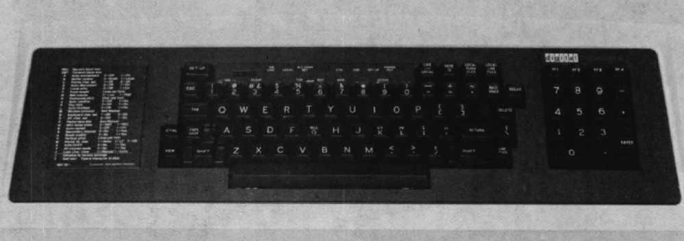
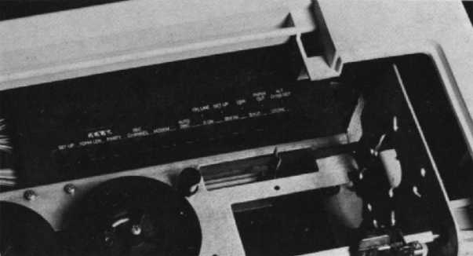

| Chapter 13 | Contents | Chapter 15 |
Chapter 14
The DECwriter III and DECprinter III are serial, dot-matrix, pedestal-mounted printers that combine bidirectional printing and a 1K character buffer to achieve 180 character-per-second throughput. The printhead automatically seeks the next print position, skipping over large areas of white space. With over 200,000 DECwriter III and DECprinter III printers already sold, these products have achieved a solid reputation for continued reliability.
The DECwriter III, the keyboard send/receive version, was specifically designed to be easy to use. It guides you through the wide range of available configuration choices, uses mnemonic commands, has a prompting LED display, and a special decal that summarizes set-up commands, and comes with a convenient pocket-sized operator card that explains procedures for selecting features.
Utilizes the proven technology of its keyboard send/receive (KSR) partner, the receive-only DECprinter III delivers high performance for local printing or communications. The DECprinter III incorporates an internal Function Control Panel, a series of controls and indicators, that permits rapid set-up, permanent or temporary storage, and modification of all necessary parameters. In addition to providing complete set-up control, the Function Control Panel displays the status condition of the terminal while in the set-up mode. An external operator panel provides for the selection of local mode, self-test, and top-of-form operation.
The following versions of the LA120 are available:
The major features of the DECwriter III and DECprinter III printers are:
|  |
The DECwriter III and DECprinter III offer a seven-by-seven dot-matrix character cell that provides output at the rate of 180 characters per second. This is suitable for draft and data printing. Printing is done through a bidirectional technique in which the printhead seeks the shortest distance to the next printable character, rapidly skipping over blank spaces.
The DECwriter III and DECprinter III offer the full 94-printing-character ASCII set, and print both uppercase and lowercase characters. Optional international character sets include Finnish, Danish, Swedish, German, Norwegian, and French. In addition, the APL set is available as an option.
The LA120 printers can print double-width characters and compressed characters. Character sizes range from 10, 12, 13.2, and 16.5 characters per inch. Double-width characters print at 5, 6, 6.6, and 8.25 characters per inch.
The LA120 printers accommodate fanfold paper from 7.6 to 37.8 centimeters (3 to 14 7/8 inches) in width. Because the DECwriter III and DECprinter III printers have forms handling capabilities, they can format output to fit preprinted forms, up to six parts. The LA120-RB has been developed to handle four- to nine-part forms. It is not recommended for single sheets. Both the KSR and RO models can accommodate selectable form lengths up to 35 centimeters (14 inches).
| Option Number | Description |
|---|---|
| LA12X-DL | 4K buffer |
| LA12X-AL | 20mA current loop interface option |
| LA12X-BB | Parallel interface |
| LA12X-CB | Data channel interface |
| LA12X-RL | APL key caps and character ROM |
| LA12X-SL | European key caps and character ROM |
| LA12X-TL | APL and European character ROMs |
The following accessories, supplies, components, and spares are available for the DECwriter III and DECprinter III. Check with your sales representative or Digital's Installed-Base Group for the latest information.
| Part Number | Description |
|---|---|
| LAXXR-12 | One dozen dual-spool nylon ribbons, 1.3 cm wide × 54.9 m long (0.5 in × 60 yards) |
| Part Number | Description |
|---|---|
| H9850-FA | Paper caddy with four 5.1 cm (2 in) swivel casters for transporting printer paper, 40 cm wide × 29.8 cm deep (15¾ in × 11¾ in) |
| LAXX-KA | Accessory kit: includes 1 LAXX-KB, 1 LAXX-KC, and 1 LAXX-KD |
| LAXX-KB | Caster set, 2 pieces |
| LAXX-KC | Work surface shelf, 60.9 cm long × 38.1 cm wide × 5.1 cm high (24 in × 15 in × 2 in) |
| LAXX-KD | Wire shelf, 26.7 cm long × 45.7 cm wide × 5.1 high cm (10.5 in × 18 in × 2 in) |
| LAXX-NC | Paper basket, 30.5 cm long × 40.6 cm wide × 33 high cm (12 in × 16 in × 13 in) |
| H981-A | Copy holder |
| DF01-A | Acoustic telephone coupler, 300 b/s with combination EIA (RS232-C) and 20 mA current loop cable |
| DF02-AA | Modem, full-duplex direct-connect, originate and auto answer, 300 b/s, Bell 103J equivalent with EIA RS232-C interface |
| DF02-AC | DF02-AA with integral asynchronous automatic dialing unit |
| DF03-AA | Direct-connect Bell 212A equivalent, 300/1200 b/s, full duplex, synchronous, asynchronous modem with EIA RS232-C interface |
| DF03-AC | DF03-AA with integral asynchronous automatic dialing unit |
| H9850-HL | Heavy-gauge vinyl dust cover, charcoal brown with Digital logo |
| LA12X-FL | Canadian French character set |
| LA12X-UA | Blank key cap kit of 50, Row 4 |
| LA12X-UB | Blank key cap kit of 50, Row 1 |
| LA12X-UC | Blank key cap kit of 50, Row 2 |
| LA12X-UD | Blank key cap kit of 50, F&J type |
| LA12X-UE | Blank key cap kit of 50, SET-UP |
| LA12X-UF | Blank key cap kit of 50, TAB |
| LA12X-UH | Blank key cap kit of 50, CAP LOCK |
| LA12X-UJ | Blank key cap kit of 50, SHIFT |
| LA12X-UL | Main array blank key cap set |
| LA12X-UM | Blank key cap kit of 50, CR |
| LA12X-UN | Blank key cap kit of 50, ENTER |
| LA12X-UP | Blank key cap kit of 50, Num Pad 0 |
| LA12X-UR | Blank key cap kit of 50, Row 3 |
| LA12X-US | Blank key cap kit of 50, Row 5 |
| LA12X-UT | Numeric pad blank key cap set |
| BC05X-15 | 20 mA current loop extension cable, 4.5 m (15 ft) |
| BC05X-25 | 20 mA current loop extension cable, 7.6 m (25 ft) |
| BC05X-50 | 20 mA current loop extension cable, 15.2 m (50 ft) |
| BC22D-10 | EIA RS232 female-female null modem shielded cable, 3.0 m (10 ft) |
| BC22D-25 | EIA RS232 female-female null modem shielded cable, 7.6 m (25 ft) |
| BC22E-10 | EIA RS232 male-female extension shielded cable, 3.0 m (10 ft) |
| BC22E-25 | EIA RS232 male-female extension shielded cable, 7.6 m (25 ft) |
The DECwriter III's operator console displays eight indicator lights, while the internal Function Control Panel of the DECprinter III displays five indicators.
| Indicator | Function | DECwriter III | DECprinter III |
|---|---|---|---|
| ON LINE | Data is transmitted and received only while the light is on, indicating the terminal is on-line. | Yes | Yes |
| LOCAL | When on, this indicator means the terminal is in local mode. The LA120-DA operates only as a typewriter at this time; it does not transmit or receive any data. | Yes | Not applicable |
| ALT CHAR SET | An optional character set, such as APL, is in use. | Yes | Yes |
| CTS | Transmission of data is enabled. | Yes | Not applicable |
| DSR | The modem is in data mode. | Yes | Yes |
| SET UP | Flashes to indicate that the printer is in set-up. | Yes | No |
| PAPER OUT | Flashes to indicate that the printer is not ready, due to a paper out, cover open, or printhead jam condition. | Yes | Yes |
By raising the top cover panel of the DECprinter III, you can easily access the internal Function Control Panel. This panel permits rapid set-up, permanent or temporary storage, and modification of all necessary parameters. Besides providing complete set-up control, the Function Control Panel displays the status condition of the printer while in the set-up mode. An external Operator Panel lets you select local mode, self-test, and top of form operation.
The absence of a full keyboard prevents interference by personnel who may be unaware that their manipulation of the keyboard may be changing your set-up parameters and accessing the computer.
The DECwriter III and DECprinter III have a voltage selector switch so you can choose the right voltage. To select the appropriate voltage, place the tip of a pen into the switch indentation, as shown in Figure 14-4. Note: Do not use a pencil to change the switch.
The Power on/off switch is located below the voltage selector switch.
The DECwriter III has an easily accessible set-up key located directly on the keyboard. The DECprinter III receive-only version can also be quickly and easily set up by simply raising the top cover panel revealing the Control Function Panel. Set-up parameters can be stored either permanently or temporarily. Set-up allows you to select a variety of features, including:
Details on how to select any of the above can be found in the LA120 User Guide or Appendix I of this handbook.
|  |
The control buttons found on the DECprinter III's internal Function Control Panel are described below.
The LA120 measures form length in lines per form. To determine how long your form is, measure the length of the form in inches, then multiply that by the number of lines per inch (horizontal pitch) you've selected. Form length ranges from 1 to 168 lines. For example, if your form length is 11 inches, and you selected a horizontal pitch of eight lines per inch, then the number of lines per form is 88. Each push of the FORM LEN button increments your form length by one line.
The parity feature enables the printer to test for parity errors in the characters it receives. It also causes the printer to set the parity bits in the characters it sends to the host computer can test the parity of those characters when it receives them.
If the parity feature is enabled and the printer detects a parity error in a character it receives, it will print an error character in place of the character which was changed in transmission.
The secondary channel feature has two meanings. First, if full-duplex operation has been chosen, the secondary channel is used to indicate the restraint mode. The second meaning applies when half-duplex modem is selected. This secondary feature can be used to indicate the presence of a secondary or reverse channel.
The modem control feature allows the printer to be connected to a modem or acoustic coupler, for use with the dial-up telephone network.
The auto disconnect causes a modem to automatically hang up the phone when it receives an EOT (End of Transmission) from the host computer, or if the printer becomes inoperable, which is most often due to a paper-out condition. This means a DECwriter III can operate as a printer without the presence of an operator.
This feature enables the printer to generate automatically the XON (DC1) and XOFF (DC3) control characters. The XOFF character asks the host computer to stop transmitting data to the printer. This prevents buffer overflow when the computer sends data faster than the printer can print it. The XON code tells the host computer to resume transmission of data. If the host computer recognizes the XON and XOFF codes, this feature is enabled.
Selecting the break feature causes the printer to send a break signal automatically in response to a paper-out, cover-open, or printhead-jam condition. If your modem system is set up to recognize break, sending a break signal may cause the phone to hang up.
The DECwriter III and DECprinter III printers offer 14 data rates from 50 to 9600 baud plus eight split baud rates with five different half- and full-duplex modes. This variety of data rates gives you the versatility needed to meet any communications requirements.
Feature settings may be stored in nonvolatile memory and then recalled at any time. It is not necessary for you to set up the operating parameters every time the printer is turned on.
The LA120 uses escape sequences standardized by the American National Standards Institute (ANSI). If an escape sequence is received by the LA120 that is not supported, it is ignored. Using escape sequences, you can control the following LA120 features.
The table below describes the function of the most commonly requested escape sequences, and lists the actual escape sequence required. Additional information on escape sequences is in the LA120 User Guide.
| Escape Sequence | Function |
|---|---|
ESC ( A |
Selects UK character set. |
ESC ( B |
Selects US character set. |
ESC [ w or ESC [ 0 w |
Selects 10 char/in. |
ESC [ 1 w |
Selects 10 char/in. |
ESC [ 2 w |
Selects 12 char/in. |
ESC [ 3 w |
Selects 13.2 char/in. |
ESC [ 4 w |
Selects 16.5 char/in. |
ESC [ 5 w |
Selects 5 char/in. |
ESC [ 6 w |
Selects 6 char/in. |
ESC [ 7 w |
Selects 6.6 char/in. |
ESC [ 8 w |
Selects 8.25 char/in. |
ESC [ z or ESC [ 0 z |
Selects 6 lines/in. |
ESC [ 1 z |
Selects 6 lines/in. |
ESC [ 2 z |
Selects 8 lines/in. |
ESC [ 3 z |
Selects 12 lines/in. |
ESC [ 4 z |
Selects 2 lines/in. |
ESC [ 5 z |
Selects 3 lines/in. |
ESC [ 6 z |
Selects 4 lines/in. |
ESC [ c or ESC [ 0 c |
LA120 transmits ESC [ ? 2 c, which is its
product identification sequence. |
ESC = |
Enables alternate keypad mode. |
ESC > |
Disables alternate keypad mode. |
There are many other escape sequences you can use. For more information, see Appendix I, the LA120 User Guide, or the LA120 Operator's Reference Card.
Over the years, DECwriter III and DECprinter III have been reliable in millions of hours of customer use. The printhead provides time-proven reliability. The wires are permanently lubricated for long life and resistance to wear. Wire curvature and support mechanisms are designed by computer simulation for minimal wear and fatigue. The use of constant-current solenoids and a ruby jewel head bearing ensures precise character formation and uniform density of character impression.
To make the LA120 even easier to maintain, all components and subassemblies are easily accessible. If replacement becomes necessary, the power supply and logic electronics are easily accessed by removing two retaining screws in the back panel. Naturally, servicing should be performed by qualified personnel.
If it appears that a problem exists in the LA120, you can initiate a self-test. Printing and nonprinting self-tests are available. To initiate a printing self-test procedure:
To initiate a nonprinting self-test procedure:
If your printer is not operating, chances are the problem is minor and you can correct it yourself. Listed below are some of the common problems, their probable cause and the corrective action that you can take. Note: Always turn off the printer before you attempt to correct a problem.
Printer does not start when power is turned on.
Characters do not print.
Light print.
Paper does not advance.
Paper tearing on multiple part forms.
Printhead jam or printhead does not move.
Keyboard frozen or printer won't print.
Garbled or double characters.
The following documents contain more detailed information about the DECwriter III and DECprinter III printers.
Also of interest are:
If you require information not contained in these documents, contact your local Digital representative, dealer, or distributor.
| Print speed | 180 char/s (draft) |
| Print technology | Bidirectional, dot matrix |
| Print density | 7 × 7 (draft) |
| Character pitch | |
| Compressed print | 16.5 char/in; 132 char/l |
| Double width | 8.25 char/in; 66 char/l |
| Compressed print | 13.2 char/in; 105.6 char/l |
| Double width | 6.6 char/in; 52.8 char/l |
| Elite pitch | 12 char/in; 96 char/l |
| Double width | 6 char/in; 48 char/l |
| Pica pitch | 10 char/in; 80 char/l |
| Double width | 5 char/in; 40 char/l |
| Line spacing | 2, 3, 4, 6, 8, or 12 l/in |
| Linefeed speed | 33 ms/l at 6 l/in |
| Buffer capacity | 1K or optional 4K |
| Buffer control | XON/XOFF or restraint signal data synchronization |
| Type | Fanfold |
| Dimensions | 7.6 cm to 37.8 cm (3 to 14.9 in) wide |
| Multiple forms | Up to 6 parts |
| Thickness | 0.50 cm (0.020 in) maximum |
| Baud rates | 50, 75, 110, 134, 134.5, 150, 300, 600, 1200, 1800, 2400, 4800, 7200, 9600 |
| Split speeds | 600 or 1200 receive with 75 or 150 transmit; 2400 or 4800 receive with 300 or 600 transmit |
| Data interface | Serial RS232-C and RS423 EIA standard |
| Parity | 7-bit, odd, even or none 8-bit, mark or space |
| All models | 120 or 240 Vac, 50 or 60 Hz |
| Power consumption | 440 W, printing maximum |
| Temperature | 10°C to 40°C (50°F to 104°F) |
| Relative humidity | 10% to 90% |
| Width | 69.9 cm (27.5 in) |
| Depth | 61.0 cm (24.0 in) |
| Height | 85.1 cm (33.5 in) |
| Weight | 46.4 kg (102 lb) |